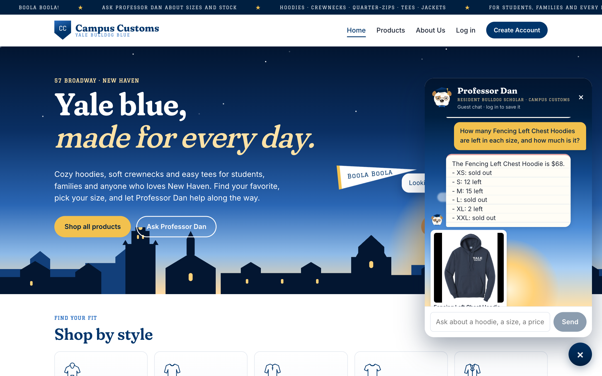
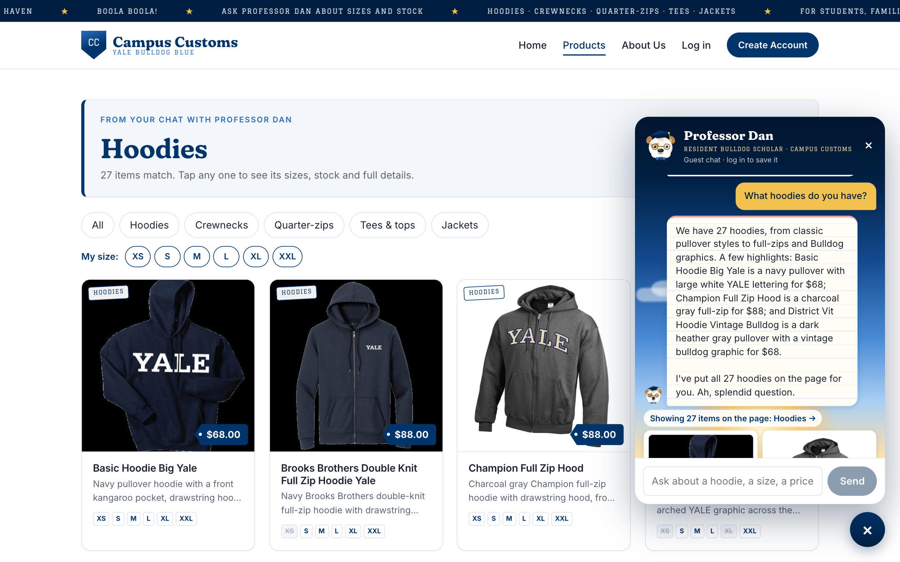
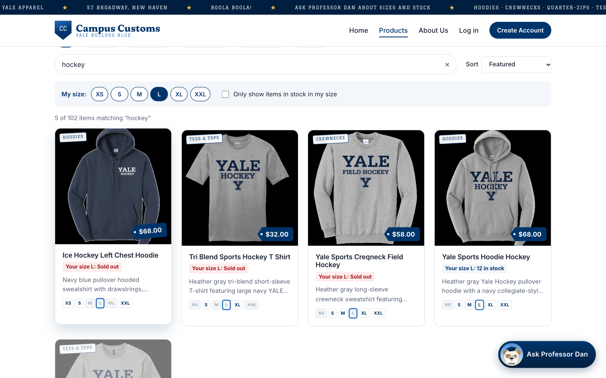

Campus Customs: Site testing (app check)
Check 1: Chat checks an item's inventory level (honest stock and price from the database)

Asked how many Fencing Left Chest Hoodies are left, the chat answered $68, with XS, L and XXL sold out and 12 in S, 15 in M and 2 in XL. That's exactly the price in the catalogue table and the six rows for this hoodie in the inventory table of campus_customs.db.
Check 2: Dynamic search-result cards appear after a category question (hoodies)

After the question “What hoodies do you have?”, the site switched to the Products page and showed a “Hoodies: 27 items match” banner with all 27 hoodie cards (image, name, price and a short description), the same 27 hoodies that are in the catalogue. Each card opens that product's single-item page when clicked.
Check 3: Usability feature from Problem 9, “My size”

With My size set to L, every product card shows its size-L stock straight from the inventory table: 3 of the 5 hockey items say “Your size L: Sold out” in red, and the others show 12 and 25 in stock. A shopper sees what they can actually buy without opening each item.